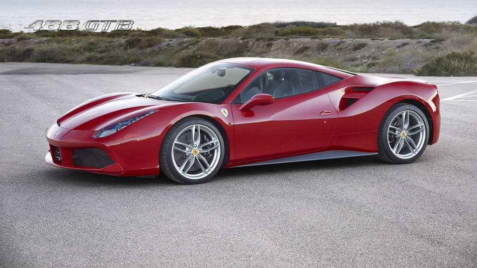
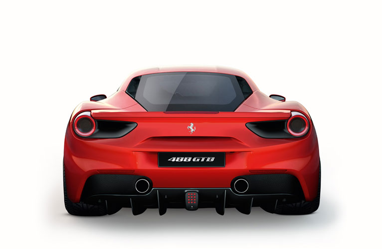
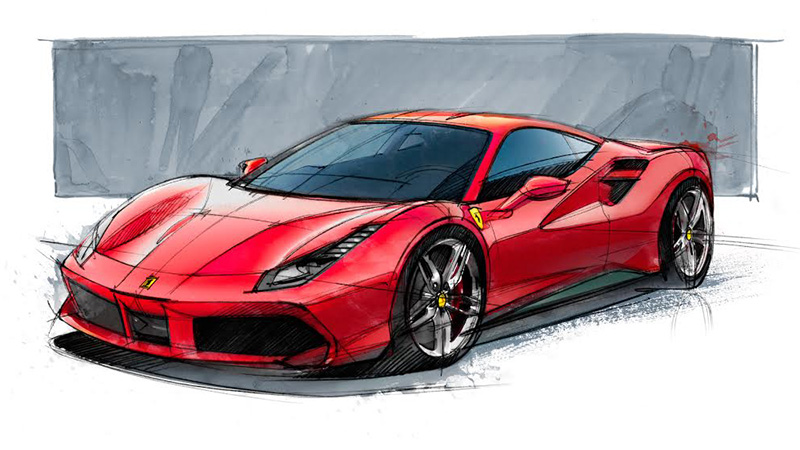
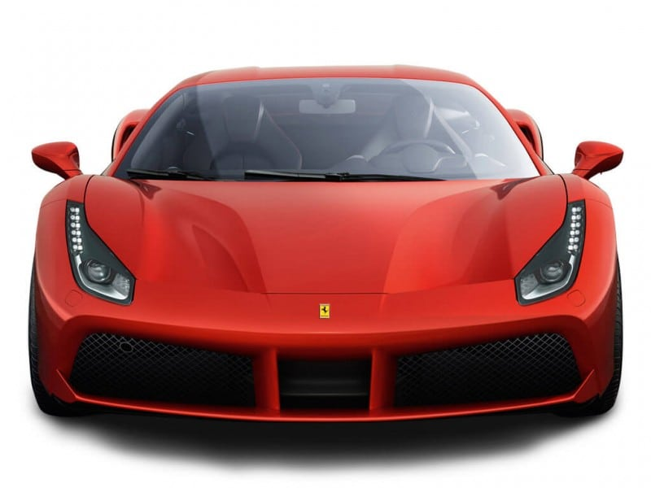
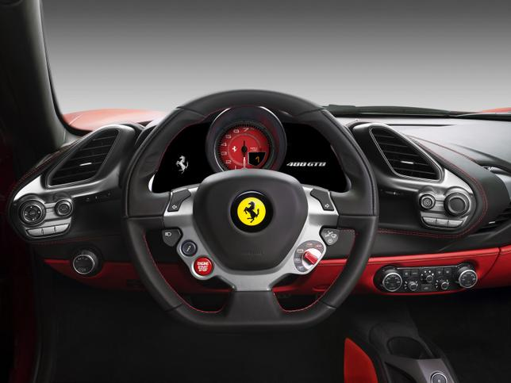

OVERVIEW
A NEW CHAPTER IN THE
HISTORY OF 8 CYLINDER

FORTY YEARS ON
FROM THE UNVEILING OF FERRARI'S FIRST
EVER MID-REAR-ENGINED V8 BERLINETTA,
THE 308 GTB, THE PRANCING HORSE OPENS A
NEW CHAPTER IN ITS 8-CYLINDER HISTORY.
The 488 GTB name marks a return
to the classic Ferrari model designation
with the 488 in its moniker indicating
the engine's unitary displacement, while
the GTB stands for Gran Turismo Berlinetta.
The new car not only delivers
unparalleled performance, it also makes
that extreme power exploitable and
controllable to an unprecedented level
even by less expert drivers.
DESIGN
About
EXTREME
SPORTINESS AND
COMFORT
Designed by the Ferrari Styling Centre,
the 488 GTB features very sculptural
flanks which are the key to its
character. Its large signature air
intake scallop is a nod to the original
308 GTB and is divided into two sections
by a splitter.

EXTERIOR
THE BODY OF FERRARI
488 GT

THE FORM BECOMES
PERFORMANCE
Designed by the Ferrari Styling Centre,
the 488 GTB features very sculptural
flanks which are the key to its character.
Its large signature air intake scallop
is a nod to the original 308 GTB and is
divided into two sections by a splitter.
The front is characterised by the dual
grille opening which channels air into
the two radiators. There is also a
double front spoiler which, on close
inspection, looks very like those of
the F1 single-seaters. At the centre
two pylons are combined with a deflector
which channels air towards the flat
underbody.
INTERIOR
THE FERRARI 488 GTB’S
CABIN

THE SEARCH
FOR ESSENTIAL
The 488 GTB’s cabin was designed to
exude extreme sportiness without
sacrificing occupant comfort. This
heightens the impression of a cockpit
tailored around the driver’s needs: the
commands not clustered on the steering
wheel are on the wraparound satellite
pods which are angled directly towards
the driver.
The new lighter, horizontally more
compact dashboard features ultra-sporty
air vents inspired by military jet air
intakes.
PERFORMANCE
| Max speed |
330 km/h(205 mph) |
| 0-100 km/h |
3.0s |
| 0-200 km/h |
8.3s |
| 0-400m |
10.45s |
| 0-1000m |
18.7s |
| Weight/power ratio |
2,04 kg/cv (6,13 lb/kW) |
More information on
www.ferrari.com